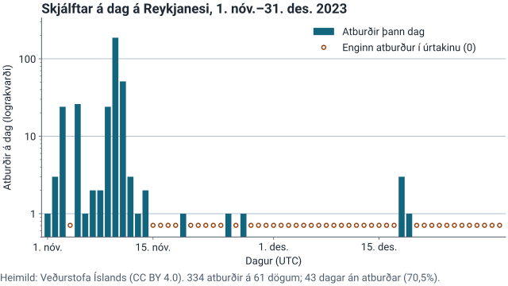

Greiningin
Niðurstaðan
Hrinan var stutt og snörp. Af skjálftum urðu í nóvember, og á einum degi.
af dögum liðu án nokkurs skjálfta.
Úrtakið
Aðeins yfirfarnir skjálftar af stærð 3 til 7, á 0–50 km dýpi, innan reits á Reykjanesskaga. Nákvæm beiðni er í kaflanum um rekjanleika.
- Atburðir
- Dagar í úrtakinu
- Dagar án atburðar
- Flestir atburðir á einum degi
- Miðgildi dýptar (km)
Tímaröð með dögum án atburðar
Hver súla er einn dagur. Opinn hringur merkir dag án skjálfta.

Sjá tölurnar sem töflu (61 dagur)
| Dagur (UTC) | Atburðir |
|---|---|
| 1. nóv. 2023 | 1 |
| 2. nóv. 2023 | 3 |
| 3. nóv. 2023 | 24 |
| 4. nóv. 2023 | 0 — enginn atburður |
| 5. nóv. 2023 | 26 |
| 6. nóv. 2023 | 1 |
| 7. nóv. 2023 | 2 |
| 8. nóv. 2023 | 2 |
| 9. nóv. 2023 | 24 |
| 10. nóv. 2023 | 187 |
| 11. nóv. 2023 | 51 |
| 12. nóv. 2023 | 3 |
| 13. nóv. 2023 | 1 |
| 14. nóv. 2023 | 2 |
| 15. nóv. 2023 | 0 — enginn atburður |
| 16. nóv. 2023 | 0 — enginn atburður |
| 17. nóv. 2023 | 0 — enginn atburður |
| 18. nóv. 2023 | 0 — enginn atburður |
| 19. nóv. 2023 | 1 |
| 20. nóv. 2023 | 0 — enginn atburður |
| 21. nóv. 2023 | 0 — enginn atburður |
| 22. nóv. 2023 | 0 — enginn atburður |
| 23. nóv. 2023 | 0 — enginn atburður |
| 24. nóv. 2023 | 0 — enginn atburður |
| 25. nóv. 2023 | 1 |
| 26. nóv. 2023 | 0 — enginn atburður |
| 27. nóv. 2023 | 1 |
| 28. nóv. 2023 | 0 — enginn atburður |
| 29. nóv. 2023 | 0 — enginn atburður |
| 30. nóv. 2023 | 0 — enginn atburður |
| 1. des. 2023 | 0 — enginn atburður |
| 2. des. 2023 | 0 — enginn atburður |
| 3. des. 2023 | 0 — enginn atburður |
| 4. des. 2023 | 0 — enginn atburður |
| 5. des. 2023 | 0 — enginn atburður |
| 6. des. 2023 | 0 — enginn atburður |
| 7. des. 2023 | 0 — enginn atburður |
| 8. des. 2023 | 0 — enginn atburður |
| 9. des. 2023 | 0 — enginn atburður |
| 10. des. 2023 | 0 — enginn atburður |
| 11. des. 2023 | 0 — enginn atburður |
| 12. des. 2023 | 0 — enginn atburður |
| 13. des. 2023 | 0 — enginn atburður |
| 14. des. 2023 | 0 — enginn atburður |
| 15. des. 2023 | 0 — enginn atburður |
| 16. des. 2023 | 0 — enginn atburður |
| 17. des. 2023 | 0 — enginn atburður |
| 18. des. 2023 | 3 |
| 19. des. 2023 | 1 |
| 20. des. 2023 | 0 — enginn atburður |
| 21. des. 2023 | 0 — enginn atburður |
| 22. des. 2023 | 0 — enginn atburður |
| 23. des. 2023 | 0 — enginn atburður |
| 24. des. 2023 | 0 — enginn atburður |
| 25. des. 2023 | 0 — enginn atburður |
| 26. des. 2023 | 0 — enginn atburður |
| 27. des. 2023 | 0 — enginn atburður |
| 28. des. 2023 | 0 — enginn atburður |
| 29. des. 2023 | 0 — enginn atburður |
| 30. des. 2023 | 0 — enginn atburður |
| 31. des. 2023 | 0 — enginn atburður |
Stærð, mánuðir og hrátt sýni
Stærð eftir kvarða
Hver stærðarkvarði er sér. Kvarðar eru aldrei lagðir saman.
Mánuðir
Hrátt sýni
Átta fyrstu færslurnar eins og Veðurstofan skráir þær.
- Auðkenni
- Einkvæmt númer atburðarins hjá Veðurstofunni.
- Tími (UTC)
- Hvenær skjálftinn varð, á heimstíma.
- Stærð og kvarði
- Stærð skjálftans og kvarðinn sem hún er mæld á.
- Dýpt (km)
- Dýpi upptakanna undir yfirborði, í kílómetrum.
- Breidd og lengd
- Staðsetning upptakanna í gráðum.
Rekjanleiki
Hver tala á síðunni kemur úr þessari einu beiðni.
Takmarkanir
- Aðeins hrinan. Úrtakið er gluggi utan um þekkta hrinu. Meðaltal lýsir engum degi og rólegt viðmiðunartímabil vantar.
- Kvarðar blandast ekki. Mlw og Mw eru ólíkir kvarðar. Hér er aðeins Mlw, og hann er ekki Richter-kvarðinn.
- Fylgni er ekki orsök. Skráin mælir ekki kvikumagn og getur því ekki sagt hvort kvika hafi safnast fyrir.
Allar takmarkanir gagnanna eru á aðferðafræðisíðunni.